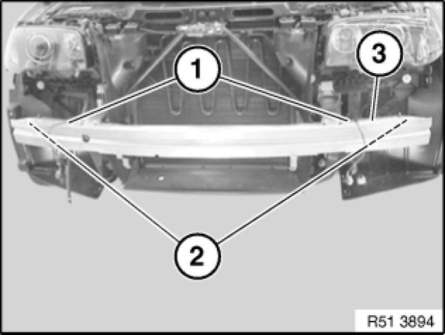
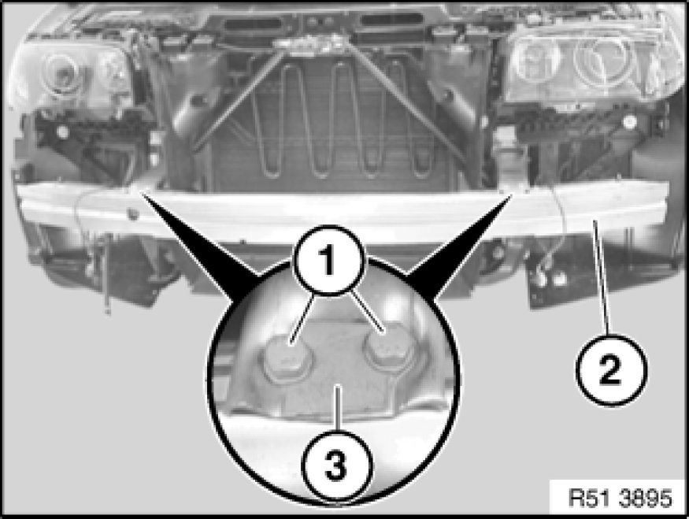
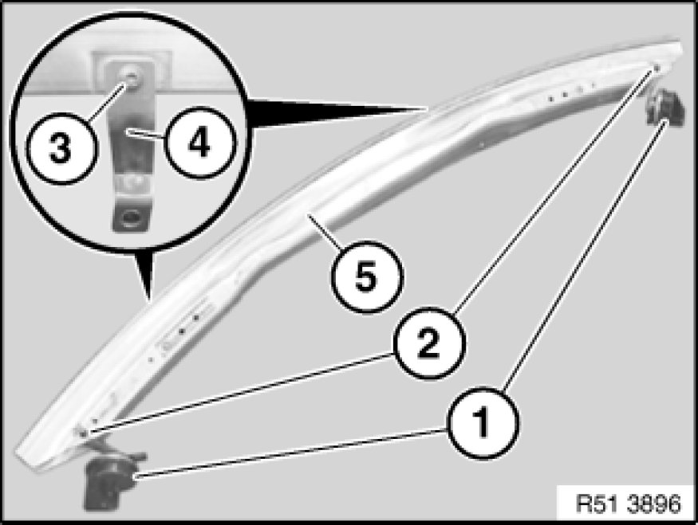

51 11 050 Removing and Installing/Replacing Carrier For Front Bumper Trim
51 11 050 - Removing and installing / replacing carrier for front bumper trim

Necessary preliminary tasks:
- Remove front bumper trim

Release cable holders (1) from carrier (3).
Disconnect plug connections (2) for fanfare horns.
If necessary, feed out line for headlight washer system.
Installation:
If necessary, replace cable holders (1).

Release screw connection (1).
Remove screws and shims (3).
Remove carrier (2).
Tightening torque 51 11 5AZ [1][2]Front Bumper.

Replacement:
-A)
- Release nuts (2) and remove fanfare horns (1).
-B)
- Release screws or rivets (3) and remove holder (4)
Note:
Depending on build date, different holders (4) are installed with different attachments:
Standard bumper:
- Holder (4) at front riveted to carrier (5)
M Technic aerodynamic kit up to 02/06:
- Holder (4) at rear screwed to carrier (5)
M Technic aerodynamic kit from 03/06:
- Holder (4) at front screwed to carrier (5)